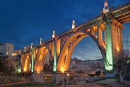
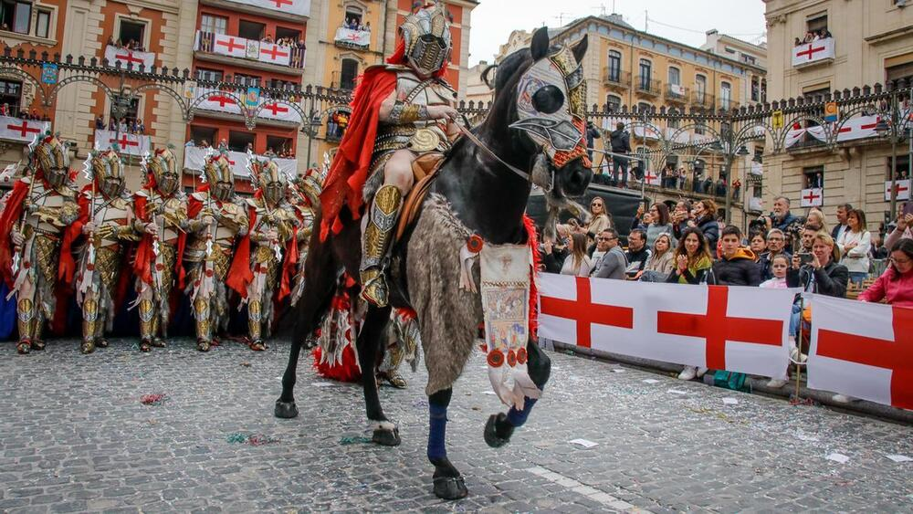
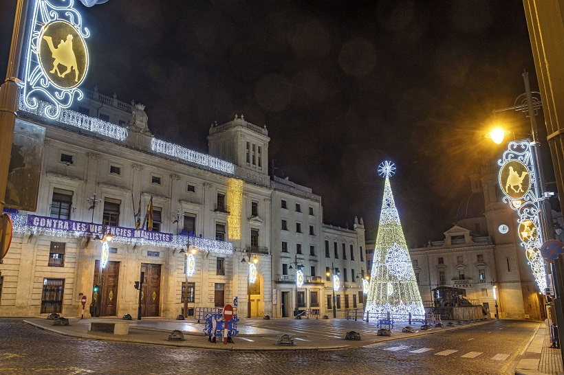

Aquesta ciutat també ha sigut molt significativa per a nosaltres i ara volem mostrar-te-la a tu. Tot va començar quan les mamis vivien la seua etapa del veganisme, no teníem supermercats on trobar menjar adaptat a la nostra dieta i en el polígon d'aquesta urbe en vam trobar un. A poc a poc, vam tenir curiositat de saber més sobre els seus llocs i les seues festes, aparcàvem en la zona nord. Però no és en aquesta zona, des d'on la ciutat es desfà de les males herbes, al llarg i ample de la seua extensió ens trobarem imatges com aquesta.
Saps de què et parle?
Mira! És ací on celebren les festes preferides del pare, encara que de moment no haja anat.
Sí, baby, estem en la ciutat de la Comunitat Valenciana, més coneguda pel seu Nadal, anem a dirigir-se cap on et mostra la fotografía. Primerament, aparcarem en Consum (zona nord), continuarem per Viuda de Tadeo Juan i baixarem a l'avinguda Juan Gil Albert, on vorem l'antiga locomotora que transportava passatgers des d'Alcoi fins a Gandia. Tot recte, ens endisarem en l'Alameda, nucli del comerç alcoià, des d'allí conituarem fins el Parc de Cervantes per tal d'arribar al centre, on trobarem les llums de Nadal.
Anem a buscar els tres junts la següent postal.